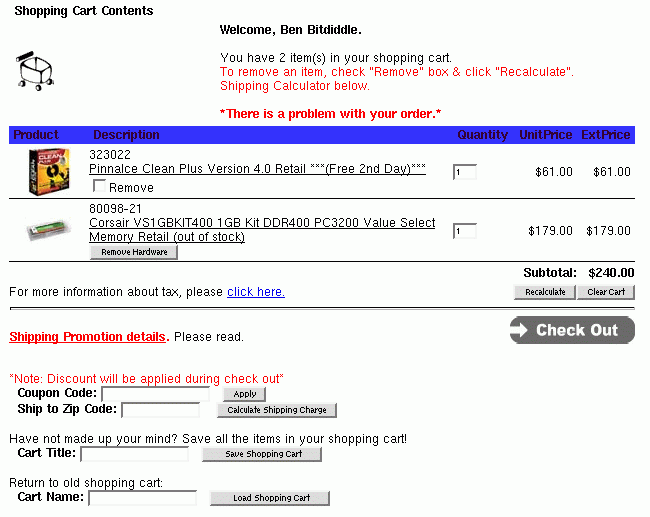

Heuristic Evaluation
Today's reading covers another technique for finding usability problems in user interfaces: heuristic evaluation. Heuristic evaluation is an inspection technique, not unlike doing a code review to find bugs in software.
Usability Guidelines ("Heuristics")
- Plenty to choose from
- Nielsen's 10 principles
- Norman's rules from Design of Everyday Things
- Tognazzini's 16 principles
- Shneiderman's 8 golden rules
- Help designers choose design alternatives
- Help evaluators find problems in interfaces ("heuristic evaluation")
To understand the technique, we should start by defining what we mean by *heuristic*. Heuristics, or usability guidelines, are rules that distill out the principles of effective user interfaces. There are plenty of sets of guidelines to choose from - sometimes it seems like every usability researcher has their own set of heuristics. Most of these guidelines overlap in important ways, however. The experts don't disagree about what constitutes good UI. They just disagree about how to organize what we know into a small set of operational rules.
Heuristics can be used in two ways: during design, to help you choose among alternative designs; and during heuristic evaluation, to find and justify problems in interfaces.
Principles from This Course
- Learnability
- Efficiency
- Safety
To help relate these heuristics to what you already know, here are the high-level principles that have organized our readings.
Nielsen Heuristics
- Match the real world (L)
- Consistency & standards (L)
- Help & documentation (L)
- User control & freedom (S)
- Visibility of system status (S)
- Flexibility & efficiency (E)
- Error prevention (S)
- Recognition, not recall (S)
- Error reporting, diagnosis, and recovery (S)
- Aesthetic & minimalist design
Jakob Nielsen, who invented the technique we're talking about, has [10 heuristics](http://www.nngroup.com/articles/ten-usability-heuristics/). (An older version of the same heuristics, with different names but similar content, can be found in his *Usability Engineering* book.)
We've talked about all of these in previous readings on usability principles (each heuristic is connected to one of the usability dimensions, marked by a letter, e.g., L for Learnability).
Norman Principles
- Consistency
- Visibility
- Affordances
- Natural mapping
- Feedback
We've also talked about some [design guidelines proposed by Don Norman](http://architectingusability.com/2012/06/28/donald-normans-design-principles-for-usability/): consistency, visibility, affordances, natural mapping, and feedback (all in the Learnability reading).
Tog's First Principles
- Anticipation
- Autonomy
- Color blindness
- Consistency
- Defaults
- Efficiency
- Explorable interfaces
- Fitts's Law
- Human interface objects
- Latency reduction
- Learnability
- Metaphors
- Protect users' work
- Readability
- Track state
- Visible navigation
Another good list is [Tog's First Principles](http://asktog.com/atc/principles-of-interaction-design/), 16 principles from Bruce Tognazzini. We've seen most of these in previous readings. Here are the ones we haven't discussed (as such):
**Autonomy** means user is in control.
**Human interface objects** is another way of saying direct manipulation: onscreen objects should be continuously perceivable, and manipulable by physical actions.
**Latency reduction** means minimize response time and give appropriate feedback for slow operations.
Shneiderman's 8 Golden Rules
- Consistency
- Shortcuts
- Feedback
- Dialog closure
- Simple error handling
- Reversible actions
- Put user in control
- Reduce short-term memory load
Finally we have [Shneiderman's 8 Golden Rules of UI design](https://www.cs.umd.edu/users/ben/goldenrules.html), which include most of the principles we've already discussed.
Heuristic Evaluation
- Performed by an expert
- Steps
- Inspect UI thoroughly
- Compare UI against heuristics
- List usability problems
- Explain & justify each problem with heuristics
**Heuristic evaluation** is a usability inspection process originally invented by Nielsen. Nielsen has done a number of studies to evaluate its effectiveness. Those studies have shown that heuristic evaluation's cost-benefit ratio is quite favorable; the cost per problem of finding usability problems in an interface is generally cheaper than alternative methods.
Heuristic evaluation is an inspection method. It is performed by a usability expert - someone who knows and understands the heuristics we've just discussed, and has used and thought about lots of interfaces.
The basic steps are simple: the evaluator inspects the user interface thoroughly, judges the interface on the basis of the heuristics we've just discussed, and makes a list of the usability problems found - the ways in which individual elements of the interface deviate from the usability heuristics.
The Hall of Fame and Hall of Shame discussions we have at the beginning of each class are informal heuristic evaluations. In particular, if you look back at previous readings, you'll see that many of the usability problems identified in the Hall of Fame & Shame are justified by appealing to a heuristic.
How To Do Heuristic Evaluation
- Justify every problem with a heuristic
- "Too many choices on the home page (Aesthetic & Minimalist Design)"
- Can't just say "I don't like the colors"
- List every problem
- Even if an interface element has multiple problems
- Go through the interface at least twice
- Once to get the feel of the system
- Again to focus on particular interface elements
- Don't have to limit to the 10 Nielsen heuristics
- Nielsen's 10 heuristics are easier to compare against
Let's look at heuristic evaluation from the evaluator's perspective. That's the role you'll be adopting later in a homework assignment, when you'll serve as heuristic evaluators for each others' computer prototypes.
Here are some tips for doing a good heuristic evaluation. First, your evaluation should be grounded in known usability guidelines. You should justify each problem you list by appealing to a heuristic, and explaining how the heuristic is violated. This practice helps you focus on usability and not on other system properties, like functionality or security. It also removes some of the subjectivity involved in inspections. You can't just say "that's an ugly yellow color"; you have to justify why this is a usability problem that's likely to affect *usability* for other people.
List every problem you find. If a button has several problems with it - inconsistent placement, bad color combination, bad information scent - then each of those problems should be listed separately. Some of the problems may be more severe than others, and some may be easier to fix than others. It's best to get all the problems on the table in order to make these tradeoffs.
Inspect the interface at least twice. The first time you'll get an overview and a feel for the system. The second time, you should focus carefully on individual elements of the interface, one at a time.
Finally, although you have to justify every problem with a guideline, you don't have to limit yourself to the Nielsen 10. We've seen or will see a number of specific usability principles that can serve equally well: affordances, visibility, Fitts's Law, perceptual fusion, color guidelines, and graphic design rules are a few. The Nielsen 10 are helpful in that they're a short list that covers a wide spectrum of usability problems. For each element of the interface, you can quickly look down the Nielsen list to guide your thinking.
Example

Let's try it on an example. Here's a screenshot of part of a web page (an intentionally bad interface). A partial heuristic evaluation of the screen is shown below. Can you find any other usability issues?
1. Shopping cart icon is not balanced with its background whitespace (graphic design)
2. **Good**: user is greeted by name (feedback)
3. Red is used both for help messages and for error messages (consistency, match real world)
4. "There is a problem with your order", but no explanation or suggestions for resolution (error reporting)
5. ExtPrice and UnitPrice are strange labels (match real world)
6. Remove Hardware button inconsistent with Remove checkbox (consistency)
7. "Click here" is unnecessary (simplicity)
8. No "Continue shopping" button (user control & freedom)
9. Recalculate is very close to Clear Cart (error prevention)
10. "Check Out" button doesn't look like other buttons (consistency, both internal & external)
11. Uses "Cart Title" and "Cart Name" for the same concept (consistency)
12. Must recall and type in cart title to load (recognition not recall, error prevention, efficiency)
Heuristic Evaluation Is Not User Testing
- Evaluator is not the user either
- Maybe closer to being a typical user than you are, though
- Analogy: code inspection vs. testing
- HE finds problems that UT often misses
- Inconsistent fonts
- Fitts's Law problems
- But UT is the gold standard for usability
Heuristic evaluation is only one way to evaluate a user interface. User testing-watching users interact with the interface-is another. User testing is really the gold standard for usability evaluation. An interface has usability problems only if real users have real problems with it, and the only sure way to know is to watch and see.
A key reason why heuristic evaluation is different is that an evaluator is not a typical user either! They may be closer to a typical user, however, in the sense that they don't know the system model to the same degree that its designers do. And a good heuristic evaluator tries to think like a typical user. But an evaluator knows too much about user interfaces, and too much about usability, to respond like a typical user.
So heuristic evaluation is not the same as user testing. A useful analogy from software engineering is the difference between code inspection and testing.
Heuristic evaluation may find problems that user testing would miss (unless the user testing was extremely expensive and comprehensive). For example, heuristic evaluators can easily detect problems like inconsistent font styles, e.g., a sans-serif font in one part of the interface, and a serif font in another. Adapting to the inconsistency slows down users slightly, but only extensive user testing would reveal it. Similarly, a heuristic evaluation might notice that buttons along the edge of the screen are not taking proper advantage of the Fitts's Law benefits of the screen boundaries, but this problem might be hard to detect in user testing.
Hints for Better Heuristic Evaluation
- Use multiple evaluators
- Different evaluators find different problems
- The more the better, but diminishing returns
- Nielsen recommends 3-5 evaluators
- Alternate heuristic evaluation with user testing
- Each method finds different problems
- Heuristic evaluation is cheaper
- It's OK for observer to help evaluator
- As long as the problem has already been noted
- This wouldn't be OK in a user test
Now let's look at heuristic evaluation from the designer's perspective. Assuming I've decided to use this technique to evaluate my interface, how do I get the most mileage out of it?
First, use more than one evaluator. Studies of heuristic evaluation have shown that no single evaluator can find all the usability problems, and some of the hardest usability problems are found by evaluators who find few problems overall (Nielsen, "[Finding usability problems through heuristic evaluation](http://dl.acm.org/citation.cfm?id=142834)", *CHI '92*). The more evaluators the better, but with diminishing returns: each additional evaluator finds fewer new problems. The sweet spot for cost-benefit, recommended by Nielsen based on his studies, is 3-5 evaluators.
One way to get the most out of heuristic evaluation is to alternate it with user testing in subsequent trips around the iterative design cycle. Each method finds different problems in an interface, and heuristic evaluation is almost always cheaper than user testing. Heuristic evaluation is particularly useful in the tight inner loops of the iterative design cycle, when prototypes are raw and low-fidelity, and iterations need to be cheap and fast.
In heuristic evaluation, it's OK to help the evaluator when they get stuck in a confusing interface. As long as the usability problems that led to the confusion have already been noted, an observer can help the evaluator get unstuck and proceed with evaluating the rest of the interface, saving valuable time. In user testing, this kind of personal help is totally inappropriate, because you want to see how a user would really behave if confronted with the interface in the real world, without the designer of the system present to guide them. In a user test, when the user gets stuck and can't figure out how to complete a task, you usually have to abandon the task and move on to another one.
Formal Evaluation Process
- Training
- Meeting for design team & evaluators
- Introduce application
- Explain user population, domain, scenarios
- Evaluation
- Evaluators work separately
- Generate written report, or oral comments recorded by an observer
- Focus on generating problems, not on ranking their severity yet
- 1-2 hours per evaluator
- Severity Rating
- Evaluators prioritize all problems found (not just their own)
- Take the mean of the evaluators' ratings
- Debriefing
- Evaluators & design team discuss results, brainstorm solutions
Here's a formal process for performing heuristic evaluation.
The training meeting brings together the design team with all the evaluators, and brings the evaluators up to speed on what they need to know about the application, its domain, its target users, and scenarios of use.
The evaluators then go off and evaluate the interface separately. They may work alone, writing down their own observations, or they may be observed by a member of the design team, who records their observations (and helps them through difficult parts of the interface, as we discussed earlier). In this stage, the evaluators focus just on generating problems, not on how important they are or how to solve them.
Next, all the problems found by all the evaluators are compiled into a single list, and the evaluators rate the severity of each problem. We'll see one possible severity scale in the next slide. Evaluators can assign severity ratings either independently or in a meeting together. Since studies have found that severity ratings from independent evaluators tend to have a large variance, it's best to collect severity ratings from several evaluators and take the mean to get a better estimate.
Finally, the design team and the evaluators meet again to discuss the results. This meeting offers a forum for brainstorming possible solutions, focusing on the most severe (highest priority) usability problems.
When you do heuristic evaluations in this class, I suggest you follow this ordering as well: first focus on generating as many usability problems as you can, then rank their severity, and then think about solutions.
Severity Ratings
- Contributing factors
- Frequency: how common?
- Impact: how hard to overcome?
- Persistence: how often to overcome?
- Severity scale
- Cosmetic: need not be fixed
- Minor: needs fixing but low priority
- Major: needs fixing and high priority
- Catastrophic: imperative to fix
Here's one scale you can use to judge the severity of usability problems found by heuristic evaluation. It helps to think about the factors that contribute to the severity of a problem: its **frequency** of occurrence (common or rare); its **impact** on users (easy or hard to overcome), and its **persistence** (does it need to be overcome once or repeatedly). A problem that scores highly on several contributing factors should be rated more severe than another problem that isn't so common, hard to overcome, or persistent.
Evaluating Prototypes
- Heuristic evaluation works on:
- Sketches
- Paper prototypes
- Buggy implementations
- "Missing-element" problems are harder to find on sketches
- Because you're not actually using the interface, you aren't blocked by feature's absence
- Look harder for them
A final advantage of heuristic evaluation that's worth noting: heuristic evaluation can be applied to interfaces in varying states of readiness, including unstable implementations, paper prototypes, and even just sketches. When you're evaluating an incomplete interface, however, you should be aware of one pitfall. When you're just inspecting a sketch, you're less likely to notice missing elements, like buttons or features essential to proceeding in a task. If you were actually *interacting* with an active prototype, essential missing pieces rear up as obstacles that prevent you from proceeding. With sketches, nothing prevents you from going on: you just turn the page. So you have to look harder for missing elements when you're heuristically evaluating static sketches or screenshots.
Writing Good Heuristic Evaluations
- Heuristic evaluations must communicate well to developers and managers
- Include positive comments as well as criticisms
- "Good: Toolbar icons are simple, with good contrast and few colors (minimalist design)"
- Be tactful
- Not: "the menu organization is a complete mess"
- Better: "menus are not organized by function"
- Be specific
- Not: "text is unreadable"
- Better: "text is too small, and has poor contrast (black text on dark green background)"
Here are some tips on writing good heuristic evaluations.
First, remember your audience: you're trying to communicate to developers. Don't expect them to be experts on usability, and keep in mind that they have some ego investment in the user interface. Don't be unnecessarily harsh.
Although the primary purpose of heuristic evaluation is to identify problems, positive comments can be valuable too. If some part of the design is *good* for usability reasons, you want to make sure that aspect doesn't disappear in future iterations.
Suggested Report Format
What to include:
- Problem
- Heuristic
- Description
- Severity
- Recommendation (if any)
- Screenshot (if helpful)
12. Catastrophic: User may close window without saving data (error prevention)
If the user has made changes without saving, and then closes the window using the Close button, rather than File >> Exit, no confirmation dialog appears.
Recommendation: show a confirmation dialog or save automatically
Answer this question: [Heuristic Evaluation](https://docs.google.com/forms/d/e/1FAIpQLSeCiEOI4iNMYADh9SC6Fw9nNe6z6ldHrf_CyQPlPL86qn5p2A/viewform?usp=sf_link)